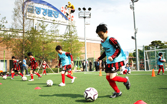

새로운 방식의 축구, 재미와 체력을 동시에
위치 : 경륜장 서쪽 잔디광장 내 4면, 규격 : 22 x 44M
실내 축구의 국제적인 형태로써 세계 2,500만 선수들이 경기에 참여하고 있습니다
풋살 5인제 축구는 농구 코트장 규격에서 경기하며,
풋살 경기장 바닥으로는 여러가지 다양한 형태가 사용됩니다.
다른 실내 축구 경기처럼 여러가지 값비싼 계기판을 이용할 필요가 없기 때문에,
경제적이고도 안전한 스포츠 종목이라고 할 수 있습니다.
| 연간회원 | 비회원 | 사용시간 | |
|---|---|---|---|
| 토/일 | 평일 | ||
| 무료 | 1회 1인(1,000원) | 09:00 ~ 20:00 | 09:00 ~ 22:00 |